小密盾so壳分析
前段时间在网上看到一款 so 壳分析文章，提供免费加固服务，直接拿文章的例子到官网加固下来练手。
分析环境
设备：Nexus5
系统：Android 6
架构：armeabi-v7a
加固前so逻辑
注册 Stringfromjni
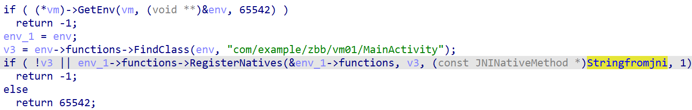
init函数
ctrl+s 查看并进入 .init_array ，就三个 init 函数
1 | .init_array:000576D8 AREA .init_array, DATA |
sub_68C8 调用 mprotect 和 cacheflush ，八成是解密某个段的内容，sub_B6F4 负责改写
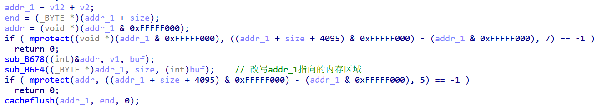
同时可以看到 JNI_Onload 函数是加密了的，而 sub_68C8 执行后 JNI_Onload 解密完成。
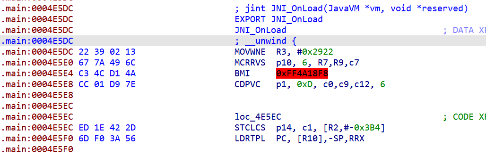
接下来断点 mprotect 拿到地址和大小 dump 下来，再 patch 回去，就能看到解密后的 JNI_Onload
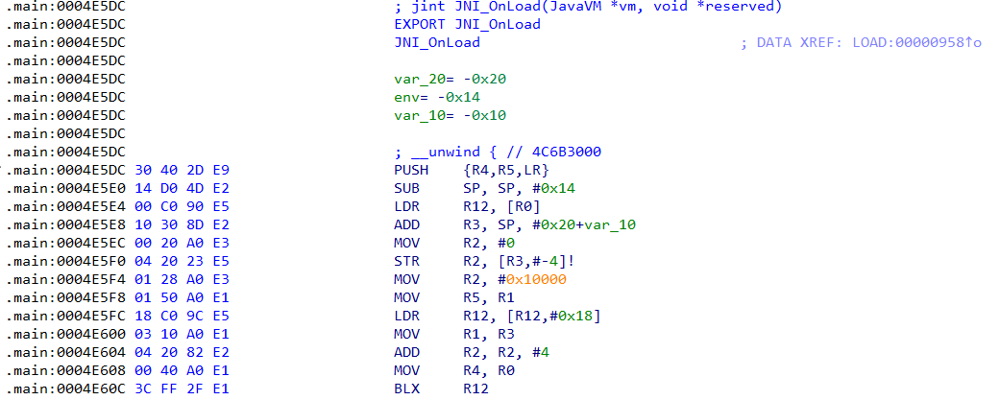
JNI_Onload函数
JNI_Onload 可以 F5 查看伪代码，sub_773C 获取 android 系统环境信息，不管它，这里主要关注 __cxa_cleanup_vir
1 | jint JNI_OnLoad(JavaVM *vm, void *reserved) |
后来发现反编译有问题，在 __cxa_cleanup_vir 下还有一个调用
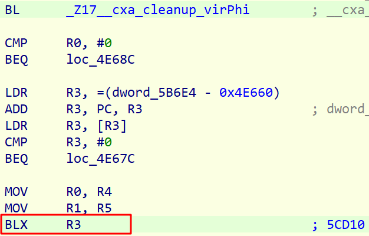
看看 BLX R3 调用到哪里，如下图是在 bss 段的函数，说明该函数是运行时拷贝上去的

继续往下走看到它调用 FindClass 和 RegisterNatives ，并且注册的是 Stringfromjni ，那么这个函数就是实现未加壳前的 jni_onload 的逻辑
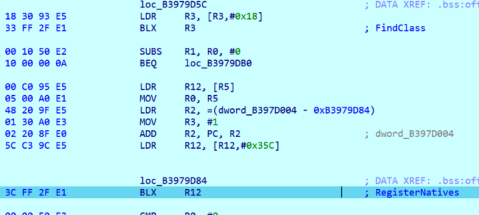
__cxa_cleanup_vir 函数就是负责生成 .bss 上的这段代码
__cxa_cleanup_vir函数
函数做了混淆，而且不是平坦化和虚假控制流，如下图函数内有两个跳转，sub_4F820 和 turnin ，这两个函数内也是做了绝对跳转，手动跟有点费时间
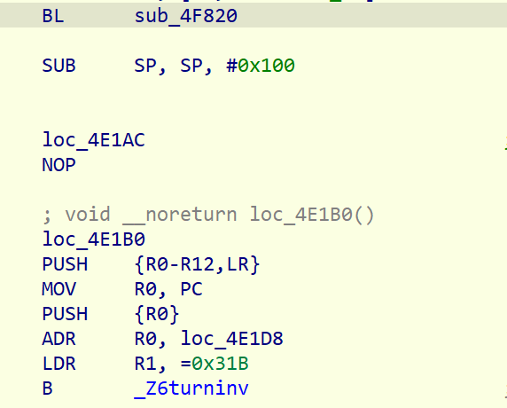
试一下 ida 自带的 trace ，在 Debugger -> Tracing -> Instruction tracing 打开指令跟踪，然后在调用 __cxa_cleanup_vir 的下一条指令处下断点，在这里让 trace 停止。
但是 trace 过程中遇到一个问题，ida 会错误识别指令为 thumb 指令，执行抛出 segment fault 导致 trace 停止，像下图这种
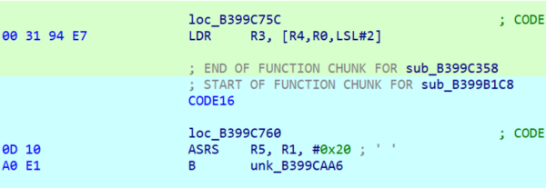
手动 alt+G 修改有点麻烦，用 idapython 对给定范围内的代码设置执行模式
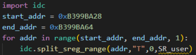
接着跟到 turnin 有一条强制跳转指令 mov PC, R0
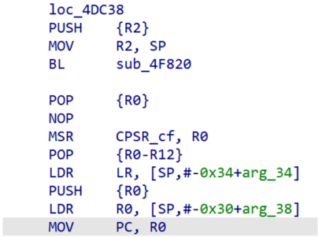
跳过去发现没有混淆，经过分析是加载原 so 以及调用原 so 的 init 函数
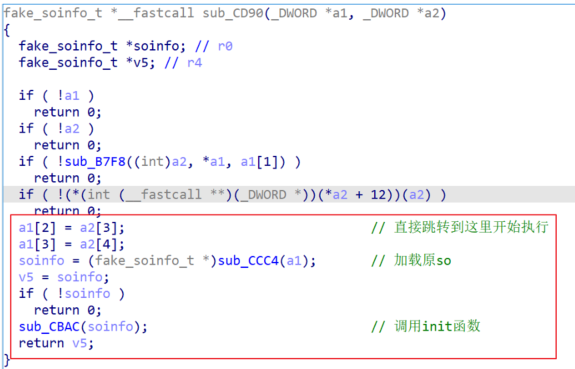
先来看 sub_CCC4 第一部分内容
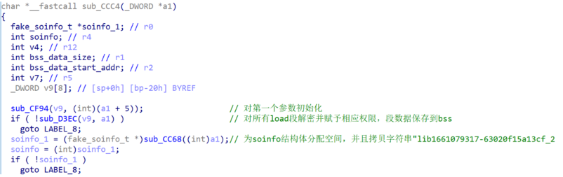
sub_D3EC 调用 sub_D1F0 ，下图是其在循环中的代码，mprotect 和 memcpy 很惹眼，调试得知是对原 load 段内容做解密，然后拷贝到 bss 上
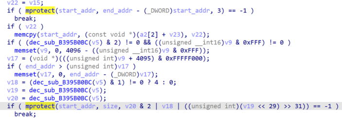
回到sub_CCC4，看第二部分内容
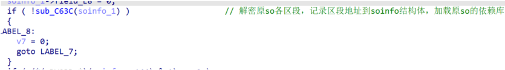
Sub_C63C 解密个别区段的内容，并且返回这些区段的地址，保存到 soinfo
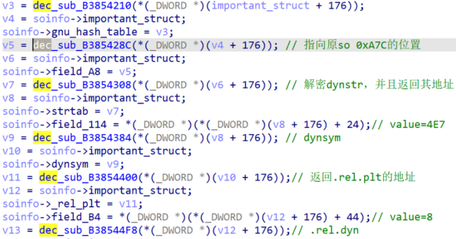
起初不知道这里返回的地址上的内容是什么意思，直到发现其中一个地址上的内容是一堆字符串，对比加固前 so 的字符串表发现一摸一样，大胆猜测是 strtab ，用同样的办法一步一步把这些解密地址所代表的意义给推断出来（要是没原so就寄了）
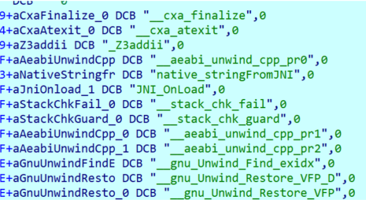
最后是加载依赖库
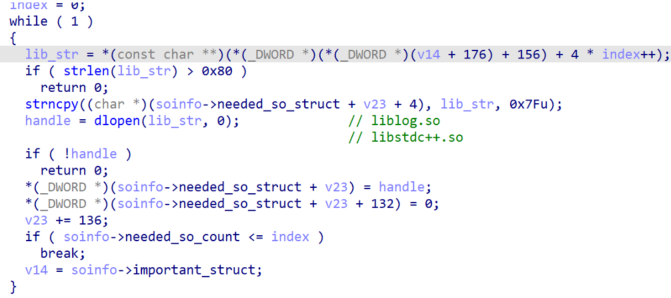
回到 sub_CCC4 ，第三部分是符号重定位，依赖于两张表 .rel.dyn 和 .rel.plt
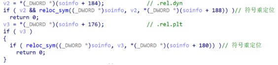
到这里，原 so 就加载到内存中，并且完成了依赖库加载、符号重定位、init 函数调用以及 JNI_Onload 的调用
总结
不像大多数的 so 内存动态解密壳，这种自加载so壳分析起来更麻烦，而且小密盾的 so 壳没法整体 dump ，它在内存中是不连续的。通过分析感觉自己对 so 加载流程不熟，有机会自己实现 so 自加载。
此外，ida 的 trace 功能不尽人意，一是有些参数信息比如字符串没打印出来，二是识别 thumb/arm 模式的问题，当然这在 64 位下不存在，最后一个问题是会跟入函数，有时候我只想跟踪当前函数，对其它函数单步步过，它并不能满足这个需求，后续可能需要使用 idapython 自己实现 trace 。